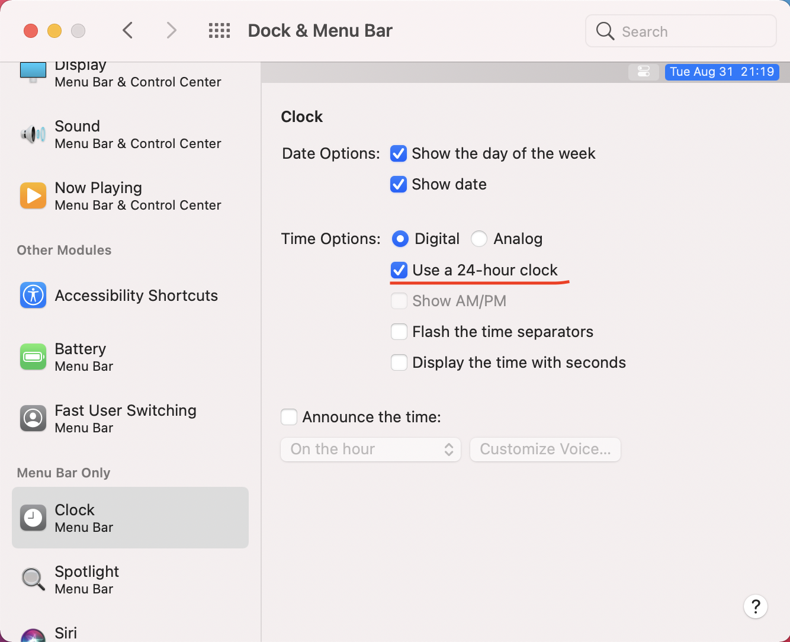

System Operation Tricks of macOS
最后更新：2022.03.25, 11:43
This article conclude the tricks about system operation tricks about macOS, and also include the previous articles about the topic.
Account Management
Change Account Name of macOS
STEP 1: Rename Home Folder (~/)
- At first, make sure you have an another administrator account (denotes as Account B) which is different from what you want to renaming (denotes as Account A). Then log out of the account you’re renaming and log in Account B.
- If assume the new name of Account A is Bob and the old name is Alice. Rename
/Users/Aliceas/Users/Bob. (NOTE: if you still log in with Account A, the operation can’t be executed!)
STEP 2: Rename Account
- keep logging in with Account B, entering
System Perference->Users & Groups,<Ctrl-click>the users you want to rename, then chooseAdvanced Options. - Change
Account namewith new account name Bob (Alice -> Bob) - Change
Home directoryas/Users/Bob Full nameis an alternative name ofAccount namewhen you need to input user name and its password, you can change it if you like.- “Click OK, then restart your Mac.” [14]
- “Log in to the renamed account, then verify that your old files and folders are visible and the account is working as expected.” [1]
This link might be also helpful: How to Change Admin Name on MacBook Pro
Input
Input Emoji & Symbols
To show emoji and other symbols, open Show Emoji & Symbols at input method switcher. Then one can switch full list and shorter list by clicking witch icon at right-top.
Turn off Autocorrect
System Perference -> Keyboard -> Text -> turn off Correct spelling automatically [1]
Date & Time
Set Time Format for macOS
To change the format of macOS, such as 24-hour, one can set at System Perference -> Dock & Manu Bar -> Clock

Display
Set Higher Resolution for Extend Screen in macOS
One can adjust the screen resolution at System Perference -> Display -> Resolution. However, recently, I connect my new MacBook Air to extend screen, but the resolution is low, and the maximum optional resolution just have 19201080. From official website of Apple*, to set higher resolution, one can try to click Scaled with pressing Option key. [13]
Finder
Show
To show files extensions in macOS, open Finder -> Perference -> Advanced -> Show all filename extensions [11]
Show Hidden Files
Step: open Finder.app -> use <cmd-S-.> to switch display state of hidden files [7]
Relaunch Finder
hold <option> and Right-click Finder icon -> Relaunch [3]
Auto-delete Files in Trash after 30 Days
Clean up trash by hand is a little trivial works. However, always clean your trash might cause some regretting things when you wish to put something back. To allow auto-delete files after the files being put to trash more than 30 days, set at About This Mac -> Storage -> Manage -> Recommandations -> Empty Trash Automatically. If wish to turn off the feature, set at Finder -> Perference -> Advanced -> Remove Items from the Trash after 30 Days [8]
File Format
Transform .epub into .pdf
on macOS, one can use software Epubor Ultimate for Mac [4]
Rename
Rename Files with Created Time
The following command rename all the files in current directory with format like 2022-02-21_21.12.12 [5]
1 | |
rename
A command line tool rename is helpful [6]
Application
Forbid Auto-launch while Starting Up
General
At few days ago, I found Steam.app will always launch while I loging in or starting up my MacBook even I trun off the auto launch option at Perference of Steam.app. Later I found to ture off it, one need cancel log in loading options at System Perference -> Users & Groups -> Login Items.
Spotify
To forbid auto-launch of Spotify, one need open Spotify then Perference -> SHOW ADVANCED SETTINGS -> turn off Open spotify automatically after you log in the computer [12]
GoodNotes
Find Directory GoodNotes Documents in macOS
The documents of GoodNotes of macOS aren’t some single files which stored at iCould folder. To find these directories, one can use TencentLemon.
1st step: open TencentLemon, click
App Uninstall(note which doesn’t means we really want to delete GoodNotes !)2ed step: find
GoodNotes, clickDetails3rd step: check each type of files, the largest item is the documents of GoodNotes
Add QQ mail to mail.app
To add QQ mail to mail.app, you need open IMAP/SMTP [17] at the setting of QQ mail (web version) [15] , then input the 授权码 as the password of e-mail [16] . Note the pop window of “input independent password” is only appearing when the language setting of QQ mail web UI is Chinese!
Use mail.app to Receive Message from UCAS Mail
The exact introduction see the official help documentation [18] . Note the set for macOS and IOS is similiar, and the most important thing is the host name is mail.cstnet.cn even your mail extension is itp.ac.cn or others.
Microsoft Office
Close Update Check of Office
Launch Lemon.app, then click Startup Items and disable the term Microsoft AutoUpdate
Web & Server Related
Flush the DNS Cache
For Big Sur or later, use the following command to flush DNC cache [10]
1 | |
iTunes
Note
iTuneswas canceled fromCatalina, but we still use the term to indicate the interface between MacBook and iPhone/iPad.
Disable iPhone backup in Catalina
- Connect device to MacBook
- Select device from
Findersidebar - Select
Generaltab - this step is the most important: uncheck
Automatically sync when this iPhone is connected - don’t forget click
Applybottom !!!
More information can see: Disable iPhone backup in Catalina
Other
Exclude Folders for Spotlight & Alfred
System Preferences -> Spotlight -> Privacy -> add folders you wish to exclude

Use “Sidecar” Function
(Big Sur or later) [9]
- open
Control Center - click
Display

- choose a device as “sidecar”, e.g.

DEBUG
通用控制输入法中英文
在 MacOS 12.3 正式版 和 iPadOS15.4正式版 时, 在 ipad 就算切换为英文输入法也会出现中文输入框。另有一些用户也有碰到此问题, 具体见
Reference
- How to turn off autocorrect on your Mac computer in 4 steps ↩
- Excluding Folders ↩
- HOW TO FORCE THE FINDER TO RESTART IN MACOS CATALINA ↩
- How to Convert EPUB to PDF on Mac ↩
- How to rename a list of files in directory based on creation time on mac ↩
- rename ↩
- How to display hidden files with Visual Studio Code ↩
- MAC 小技巧 – 讓垃圾桶中超過 30 天的檔案自動清除 ↩
- Use an iPad as a second display for a Mac ↩
- How to Flush the DNS Cache in Mac OS X & macOS ↩
- How to Always Show File Extensions in MacOS ↩
- How To Stop Spotify From Opening On Startup ↩
- 更改 Mac 显示器的分辨率 ↩
- Change the name of your macOS user account and home folder ↩
- 怎样设置iPhone邮件（添加QQ邮箱及删除账户）？ ↩
- iphone/Mac上添加QQ邮箱 ↩
- IMAP和POP的区别 ↩
- 如何在iPhone iOS13系统中设置SSL加密的IMAP帐户？ ↩
本博客所有文章除特别声明外，均采用 CC BY-NC-SA 4.0 协议 ，转载请注明出处！